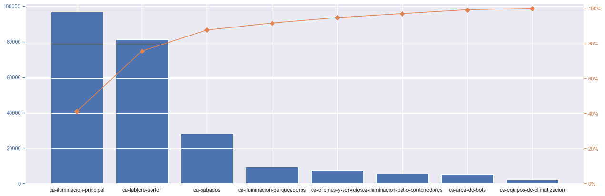
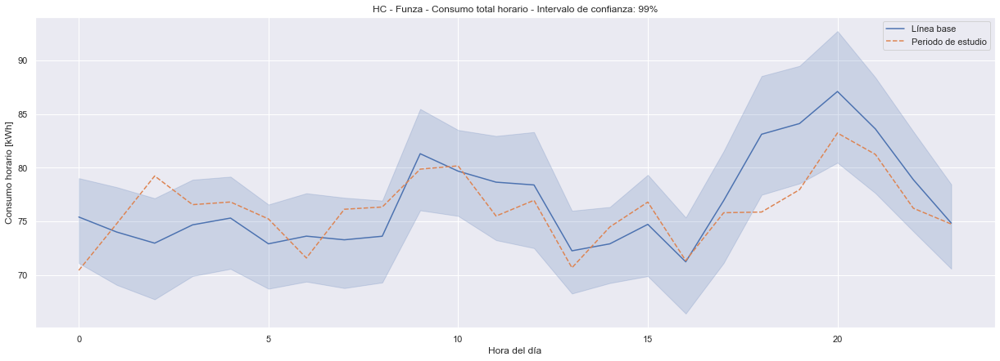
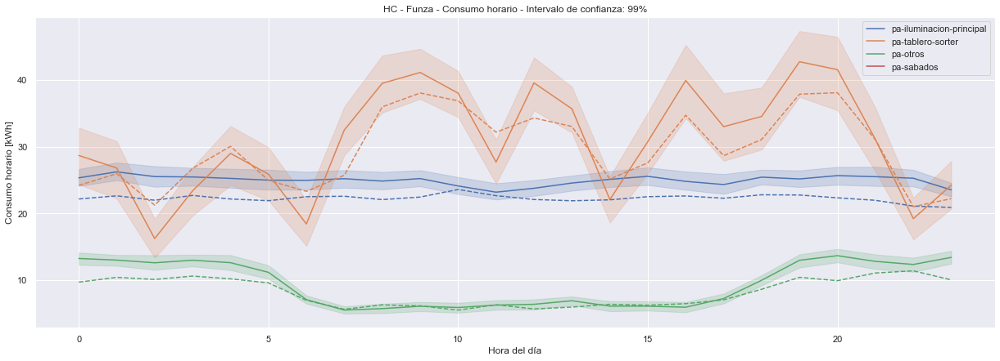
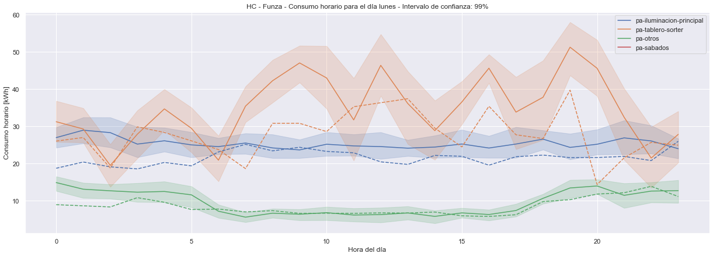
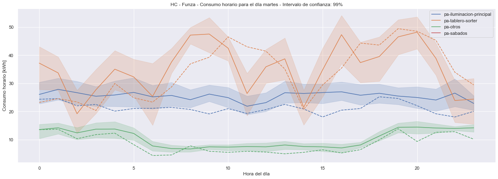
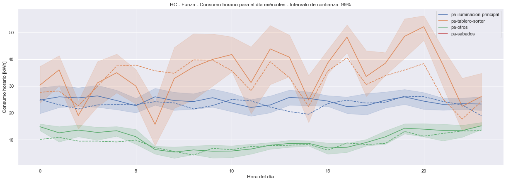
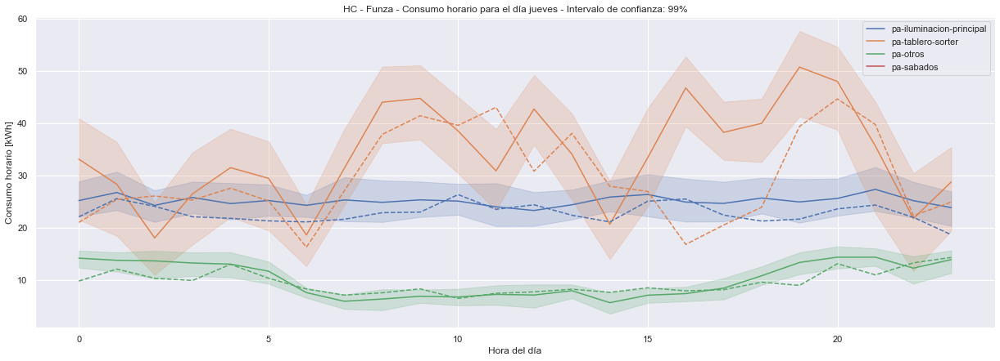
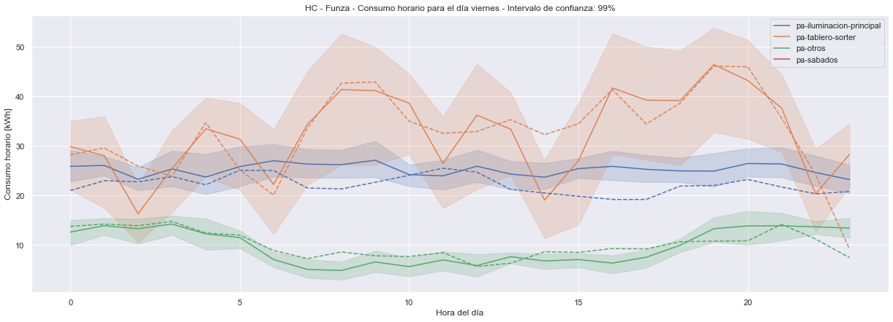
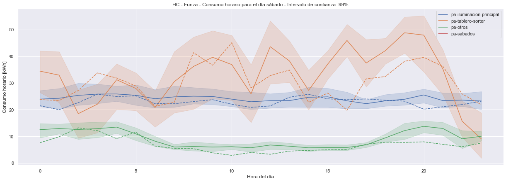
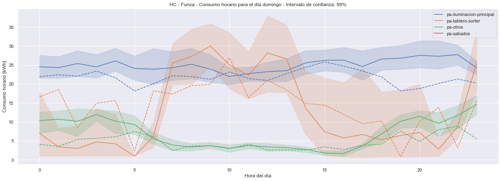

Sede: Funza
Contents
Sede: Funza¶
save_figures = False
use_pickled_data = False
show_optional_figures = False
cop_per_kwh = 692.29
# Specify the date interval to fetch data from
# the format must be: 'YYYY-MM-DD'
BASELINE_DATE_INTERVAL = {
'start': '2022-01-01',
'end': '2022-05-31'
}
STUDY_DATE_INTERVAL = {
'start': '2022-06-01',
'end': '2022-06-30'
}
check_intervals(BASELINE_DATE_INTERVAL, STUDY_DATE_INTERVAL, ALLOWED_DATE_OVERLAP)
DATE_INTERVALS_TO_DISCARD = [
# ['2022-05-11', '2022-05-22']
]
device_group_label = 'homecenter-sedes'
dct_available_devices = get_available_devices(device_group_label)
# LST_DEVICE_ID_TO_REQUEST = list(dct_available_devices.keys())
LST_DEVICE_ID_TO_REQUEST = '623b27b01d0b0e9d73fd8ae7'
ACTIVE_ENERGY_LABEL = 'ea-total'
ACTIVE_POWER_LABEL = 'pa-total'
POWER_NON_MAIN_LABEL = 'pa-otros' # not used for Molinos
# LST_VAR_LABELS = [ACTIVE_POWER_LABEL]
SUB_STR = ('pa-', 'ea-')
DCT_AVAILABLE_VARIABLES = get_available_variables(LST_DEVICE_ID_TO_REQUEST)
LST_VAR_LABELS = [s for s in DCT_AVAILABLE_VARIABLES.values() if s.startswith(SUB_STR)]
LST_VAR_LABELS.sort()
show_variable_labels_to_request()
Variable labels to request:
[
"ea-area-de-bots",
"ea-area-de-corte",
"ea-car-center",
"ea-concesion",
"ea-equipos-de-climatizacion",
"ea-equipos-verticales",
"ea-iluminacion-parqueaderos",
"ea-iluminacion-patio-constructor",
"ea-iluminacion-patio-contenedores",
"ea-iluminacion-principal",
"ea-oficinas-y-servicios",
"ea-sabados",
"ea-tablero-sorter",
"ea-talleres",
"ea-total",
"pa-area-de-bots",
"pa-equipos-de-climatizacion",
"pa-iluminacion-parqueaderos",
"pa-iluminacion-patio-contenedores",
"pa-iluminacion-principal",
"pa-oficinas-y-servicios",
"pa-tablero-sorter"
]
Get data:¶
Request and parse:¶
df = None
if (use_pickled_data is True):
df = pd.read_pickle(PICKLED_DATA_FILENAME)
else:
response_bl, response_st = request_data()
df = parse_response(response_bl, response_st)
pd.to_pickle(df, PICKLED_DATA_FILENAME)
show_response_contents(df)
Shape of baseline data: (44425, 4)
Shape of study data: (13088, 4)
The response contains:
[
"ea-area-de-bots",
"ea-equipos-de-climatizacion",
"ea-iluminacion-parqueaderos",
"ea-iluminacion-patio-contenedores",
"ea-iluminacion-principal",
"ea-oficinas-y-servicios",
"ea-sabados",
"ea-tablero-sorter",
"ea-total",
"pa-area-de-bots",
"pa-equipos-de-climatizacion",
"pa-iluminacion-parqueaderos",
"pa-iluminacion-patio-contenedores",
"pa-iluminacion-principal",
"pa-oficinas-y-servicios",
"pa-tablero-sorter"
]
[
"hc-funza"
]
# df, df_raw = post_process_data(df)
df = post_process_data(df)
df
| value | variable | device | device_name | outlier | dow | hour | month | |
|---|---|---|---|---|---|---|---|---|
| datetime | ||||||||
| 2022-03-09 10:01:32-05:00 | NaN | pa-iluminacion-parqueaderos | hc-funza | HC - Funza | False | miércoles | 10 | 3 |
| 2022-03-09 10:02:16-05:00 | NaN | pa-iluminacion-parqueaderos | hc-funza | HC - Funza | False | miércoles | 10 | 3 |
| 2022-03-09 10:15:01-05:00 | 0.1 | pa-iluminacion-parqueaderos | hc-funza | HC - Funza | False | miércoles | 10 | 3 |
| 2022-03-09 10:30:00-05:00 | 0.1 | pa-iluminacion-parqueaderos | hc-funza | HC - Funza | False | miércoles | 10 | 3 |
| 2022-03-09 10:30:00-05:00 | NaN | pa-iluminacion-patio-contenedores | hc-funza | HC - Funza | False | miércoles | 10 | 3 |
| ... | ... | ... | ... | ... | ... | ... | ... | ... |
| 2022-06-30 00:00:00-05:00 | NaN | ea-total | hc-funza | HC - Funza | False | jueves | 0 | 6 |
| 2022-06-30 00:00:00-05:00 | NaN | pa-area-de-bots | hc-funza | HC - Funza | False | jueves | 0 | 6 |
| 2022-06-30 00:00:00-05:00 | NaN | pa-iluminacion-patio-contenedores | hc-funza | HC - Funza | False | jueves | 0 | 6 |
| 2022-06-30 00:00:00-05:00 | NaN | pa-oficinas-y-servicios | hc-funza | HC - Funza | False | jueves | 0 | 6 |
| 2022-06-30 00:00:00-05:00 | NaN | pa-tablero-sorter | hc-funza | HC - Funza | False | jueves | 0 | 6 |
57497 rows × 8 columns
show_outlier_counts(df)
print(' ')
print('Data counts:')
print(df.groupby('variable').count().sort_values(by='value', ascending=False)['value'])
if (validate_cleaning is True):
# TODO: make this loop trough all variables
# to present a complete picture of cleaning
# performance.
run_cleaning_analysis(
variable='pa-iluminacion-patio-constructor', # 'pa-oficinas-y-servicios', # 'pa-equipos-de-climatizacion', #
start_date='2022-01-01',
end_date='2022-06-30',
bins=15,
wide_figsize=(45,10),
square_figsize=(10,10)
)
Outlier counts:
pa-iluminacion-principal 2633
pa-oficinas-y-servicios 2503
pa-tablero-sorter 1924
pa-area-de-bots 1729
pa-equipos-de-climatizacion 1713
ea-total 1384
ea-iluminacion-principal 1384
ea-tablero-sorter 1136
ea-area-de-bots 1060
ea-iluminacion-parqueaderos 953
ea-oficinas-y-servicios 919
ea-equipos-de-climatizacion 909
ea-iluminacion-patio-contenedores 563
pa-iluminacion-parqueaderos 461
pa-iluminacion-patio-contenedores 448
ea-sabados 178
Name: variable, dtype: int64
Data counts:
variable
pa-iluminacion-principal 8317
pa-oficinas-y-servicios 5824
pa-tablero-sorter 5013
pa-area-de-bots 4893
pa-equipos-de-climatizacion 4872
pa-iluminacion-parqueaderos 4811
pa-iluminacion-patio-contenedores 4762
ea-total 2676
ea-iluminacion-principal 2619
ea-area-de-bots 2310
ea-tablero-sorter 2297
ea-iluminacion-patio-contenedores 2269
ea-iluminacion-parqueaderos 2250
ea-oficinas-y-servicios 2194
ea-equipos-de-climatizacion 1989
ea-sabados 353
Name: value, dtype: int64
print(f"El consumo de energía durante el periodo de línea base fue: {round(consumo_baseline,2)} kWh")
print(f"El consumo de energía durante el periodo de observación fue: {round(consumo_estudio,2)} kWh")
El consumo de energía durante el periodo de línea base fue: 51341.5 kWh
El consumo de energía durante el periodo de observación fue: 53078.51 kWh
Results:¶
Figuras:¶
Análisis de Pareto:¶
lst_main_labels, hue_order, s_pareto = run_pareto_analysis(df)
plot_pareto(s_pareto)
print("Main variable labels:")
print(json.dumps(lst_main_labels, sort_keys=True, indent=4))

Main variable labels:
[
"pa-iluminacion-principal",
"pa-tablero-sorter",
"pa-sabados"
]
Figuras día típico:¶
plot_aggregated_hourly_consumption_from_energy(df)

plot_ci_by_hour_single_figure(df, lst_main_labels, hue_order)

Figuras por día de la semana:¶
plot_ci_per_dow_multiple_fig_from_power(df, lst_main_labels, hue_order)






